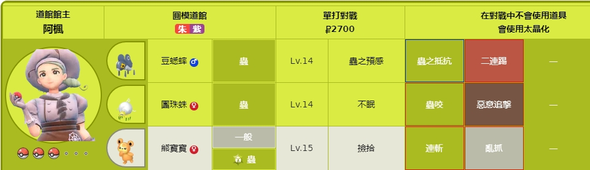
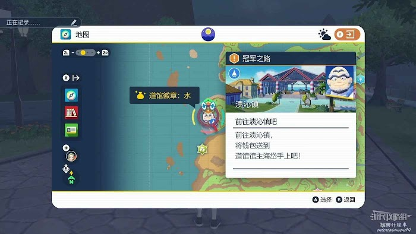
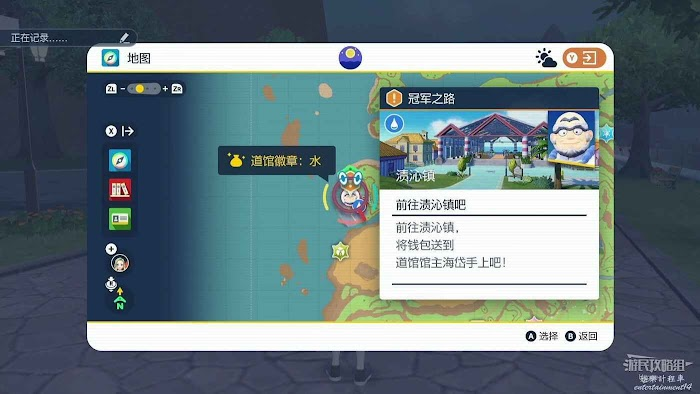
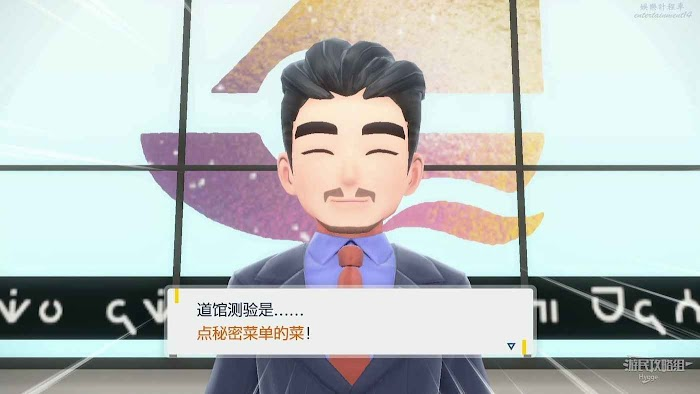
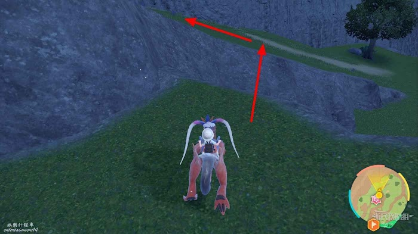
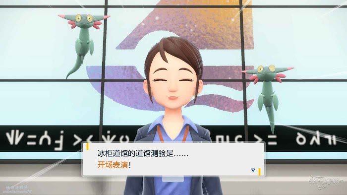
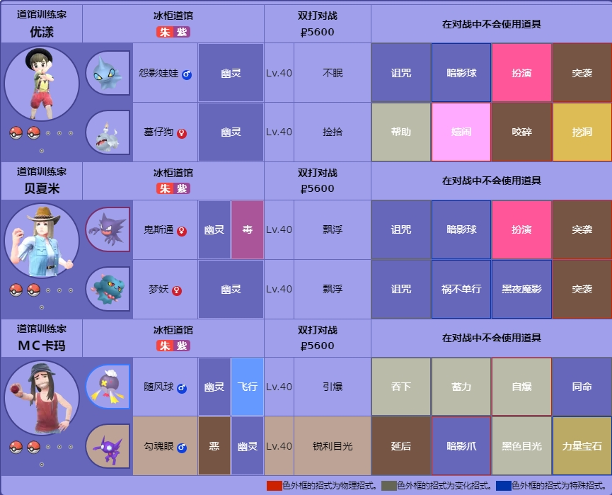
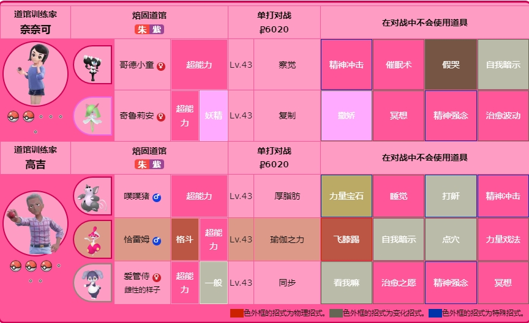
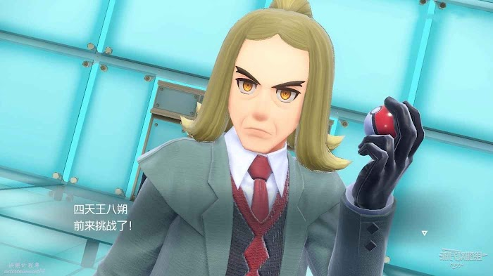
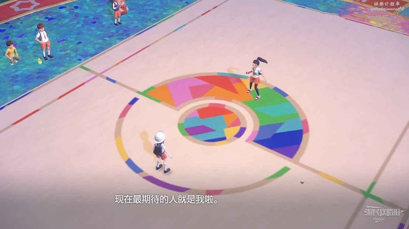

新手向介紹
在自己家中通過樓梯來到一樓。 來到一樓後向左走前往廚房和媽媽交談。 交談完畢後來到樓梯前的大門處見到了我們即將入學的橘子學院的校長，隨後需要回到樓上的房間做好入學準備。 在二層的床頭拿到我們的書包和帽子後再回到一樓。 跟隨校長來到屋外後，我們可以從三隻寶可夢中挑選一隻作為我們的夥伴。三隻寶可夢分別為
新葉喵 Learn more
速度值较高的新叶喵最初就具有很高的速度值，最终进化形态速度值能达到123，更有机会发动先制攻击。先手使用属性一致的太晶招式并攻击克制属性的话，能够在第一招就造成大量伤害，在道馆战和BOSS战中的表现非常值得期待。其梦特（隐藏特性）【变换自如】可以根据所使用的招式来改变自身属性，考虑到这一点可以让新叶喵多学习一些其他属性的招式。
呆火鱷 Learn more
耐打的呆火鳄 与其它两位御三家相比，呆火鳄的速度相对较低，但HP值和防御值相对较高，因此在应对物理攻击宝可梦时它的耐打能力很高。其新招式可以提高特攻，在宝主战、太晶团体战中相对更加有效。
潤水鴨Learn more
主线推荐选润水鸭。 润水鸭的最终进化形态属性为格斗和水，非常适合应对道馆主、BOSS战以及宝主宝可梦，并且最终进化形态有较高的攻击值，速度值也不错，推荐给想要高效推主线的玩家。能够提升速度的专属招式也非常实用，在排位战中可能会发挥出意想不到的作用
【手機洛托姆】Learn more
是一種擁有寶可夢圖鑑等強大功能的手機，首次出現於《劍／盾》，裡面住著可以進入各種電器的寶可夢洛托姆。除了寶可夢圖鑑外，把牠安裝在自行車上，玩家不但能在陸地上快速奔馳，還能夠在水上移動。
 在包包中選擇使用精靈球捕獲寶可夢。
當精靈球在地面搖晃三次，球上的燈光由白轉綠且彈出星星的特效後則表示該寶可夢成功捕獲。
隨後沿著小路向遠處的燈塔前進。
在來到燈塔前時我們聽到了一陣奇特的叫聲，隨後我們需要找到神秘叫聲的來源。
在倒下的柵欄出來到懸崖邊。
在下方我們可以見到一個倒在沙灘上奇特的寶可夢。
來到沙灘後將媽媽給我們的三明治喂給它。
隨後跟著該寶可夢進入山洞。
在前進途中神秘的寶可夢會破壞攔路的巨石並驅逐前來騷擾的戴魯比們。
在我們被戴魯比包圍時，神秘寶可夢將我們抱起跳出山洞成功與妮莫會合。
在包包中選擇使用精靈球捕獲寶可夢。
當精靈球在地面搖晃三次，球上的燈光由白轉綠且彈出星星的特效後則表示該寶可夢成功捕獲。
隨後沿著小路向遠處的燈塔前進。
在來到燈塔前時我們聽到了一陣奇特的叫聲，隨後我們需要找到神秘叫聲的來源。
在倒下的柵欄出來到懸崖邊。
在下方我們可以見到一個倒在沙灘上奇特的寶可夢。
來到沙灘後將媽媽給我們的三明治喂給它。
隨後跟著該寶可夢進入山洞。
在前進途中神秘的寶可夢會破壞攔路的巨石並驅逐前來騷擾的戴魯比們。
在我們被戴魯比包圍時，神秘寶可夢將我們抱起跳出山洞成功與妮莫會合。
 找到神秘寶可夢後繼續向塔前進。
在塔下我們見到了奧琳博士的兒子派帕，通過他我們得知神秘的寶可夢叫做
找到神秘寶可夢後繼續向塔前進。
在塔下我們見到了奧琳博士的兒子派帕，通過他我們得知神秘的寶可夢叫做
故勒頓Learn more
故勒頓似乎就是古老的探險記所提到的翼大王，據記載，它曾用拳頭擊裂大地。雖然外觀與摩托蜥相似，但它卻比摩托蜥更頑強凶暴。有關它的生態等資訊一切未明，故勒頓這個名字是由發現它的博士命名而來。故勒頓有無可撼動的強者意識，它自覺擁有出類拔萃的強大實力，無論面對怎樣的對手，都能表現得毫無畏懼。雖然戒備著人類，但它性情多變且好奇心旺盛，有時也會主動來嬉鬧。當它處於完全形態時，能以壓倒性的力量碾壓對手。它能以強大的腳力蹬地，跳躍到20米以上的高度，利用下落速度和自身體重的相乘效果使出極具破壞力的踢擊或撞擊。[
【太晶化】Learn more
寶可夢需要太晶珠才能太晶化。太晶珠是只有帕底亞地區一部分受到認可的寶可夢訓練家才能擁有的特殊道具。
【寶主】Learn more
是帕底亞地區特有的巨大寶可夢。200年前第零區探險隊在第零區發現一種奇妙的植物，稱為秘傳調味料。他們把這種第零區特有的植物種植在帕底亞各處，但周圍的野生寶可夢吃下了未成長完全的秘傳調味料，變得異常巨大，被稱為寶主寶可夢。


冠軍之路-圓模道館
首先挑戰的是級別最低的圓模道館。
圓模道館位於西第1區和南第6區之間的圓模鎮中，該道館的館主為訓練場蟲屬性寶可夢的訓練師阿楓。
來到圓模鎮後找到並進入圓模道館。
與前臺交談得知必須先完成測驗【滾橄欖】後才能夠挑戰館主。
來到圓模鎮北部的滾橄欖場地後，與負責人交談開始測驗。
在測驗中我們可以騎乘故勒頓來推動場地中的巨大橄欖。
人和寶可夢組成的路障無法通過，必須尋找其他的道路。
最終將橄欖推出粉紅色的框中即可完成測驗，測驗無時間限制可以慢慢完成。
完成測驗後再返回蟲道館即可挑戰館主阿楓。
阿楓的第一個寶可夢為14級的豆蟋蟀，該寶可夢的屬性為【蟲】屬性。
第二隻寶可夢為14級的蟲屬性寶可夢團珠蛛。
第三只寶可夢為15級的一般屬性寶可夢熊寶寶。

道館館主在第三只寶可夢登場後會對其使用太晶化，通過太晶化後的形態可以發現熊寶寶的太晶化屬性為蟲屬性。
對戰該道館館主時，使用火、飛行和岩石屬性的寶可夢可以輕鬆取得勝利。
 戰勝阿楓後獲得蟲道館徽章。
戰勝阿楓後獲得蟲道館徽章。
冠軍之路-深缽道館
接下來我們需要前往位於深缽鎮，挑戰位於此處的草道館館主。 挑戰草道館館主同樣需要先完成測驗，草道館的測驗為收集向日花怪。 與道館旁的測驗負責人交談開始測驗，我們需要在深缽鎮中收集10個向日花怪。 某些向日花怪處於活躍狀態，在我們靠近時會立刻跑走，使用故勒頓的衝刺能力追上後進入戰鬥，將其擊敗即可使其跟我們走。 除此之外的向日花怪均為沉睡狀態，接近後按下A鍵互動即可。將10只向日花怪帶給測驗負責人即可完成該測驗。 草道館館主寇沙的第一隻寶可夢為16級的草屬性寶可夢百合根娃娃。 第二隻寶可夢為16級的草屬性寶可夢迷你芙。 第三只寶可夢為17級的岩石屬性寶可夢樹才怪。 樹才怪會通過太晶化能力轉變為草屬性，使用火、冰、毒、飛行和蟲屬性的寶可夢戰鬥可以較為輕鬆的擊敗寇沙。
冠軍之路-釀光道館
釀光道館位於東第2區的釀光市中，該道館館主為擅長訓練電屬性寶可夢的訓練師奇樹。
建議使用地面屬性的寶可夢挑戰該道館。
當來到釀光道館時妮莫再次出現並邀請我們進行戰鬥。
妮莫的第一隻寶可夢為21級岩石屬性的岩狗狗。
第二隻寶可夢為21級電屬性的布撥。
第三只寶可夢為22級草屬性的蒂蕾喵，在派出蕾蒂喵後妮莫會使用太晶化能力進行戰鬥。將三隻寶可夢全部擊敗後即可再次前往挑戰道館。
在道館前臺登記後得知釀光道館的測驗為配合奇樹出現直播節目。
主播活動為捉迷藏，我們需要通過攝像頭將藏在小鎮中的校長找出來。
第一關中校長位於右側的遮陽傘下。
 第二關校長藏在左側的寶可夢中心內。
第二關校長藏在左側的寶可夢中心內。
 第三關校長位於戰鬥場地右側的小船上，完成測驗後即可前往道館挑戰奇樹。
奇樹的第一隻寶可夢為22級電和飛行屬性的寶可夢電海燕。
第二隻寶可夢是23級的電屬性寶可夢勒克貓。
第三只寶可夢為23級電屬性寶可夢電肚蛙，該寶可夢會在受到水屬性傷害時充電。
奇樹的第四只寶可夢為24級的夢妖魔，該寶可夢會通過太晶化轉變為電屬性。
擊敗奇樹後獲得電道館徽章，此後我們捕捉35級以下的寶可夢會更加輕鬆。
第三關校長位於戰鬥場地右側的小船上，完成測驗後即可前往道館挑戰奇樹。
奇樹的第一隻寶可夢為22級電和飛行屬性的寶可夢電海燕。
第二隻寶可夢是23級的電屬性寶可夢勒克貓。
第三只寶可夢為23級電屬性寶可夢電肚蛙，該寶可夢會在受到水屬性傷害時充電。
奇樹的第四只寶可夢為24級的夢妖魔，該寶可夢會通過太晶化轉變為電屬性。
擊敗奇樹後獲得電道館徽章，此後我們捕捉35級以下的寶可夢會更加輕鬆。

冠軍之路-玻瓶道館
玻瓶道館位於西第2區的玻瓶市中，該道館的主人是擅長訓練水屬性寶可夢的海岱。建議使用電或草屬性寶可夢戰鬥。
 來到玻瓶鎮的的廣場上後可以通過旁邊的升降梯到達道館門口。
來到道館門口時我們見到一個壯碩的男人離開的道館，從追出來的工作人員口中我們得知那個男人正是館主海岱。
而他此時正要前往隔壁小鎮進行採購，但卻忘記帶錢包，因此工作人員希望我們可以幫她把錢包帶給海岱。
之後我們需要前往位於海邊的漬沁鎮。

來到漬沁鎮在市場中可以找到海岱和他的大弟子。
海岱的大弟子以為我們是來添亂的，所以向我們發起了寶可夢決鬥。
將大弟子擊敗後誤會解除，成功將錢包交給海岱。
隨後海岱會交給我們5萬塊錢讓我們幫他買下拍賣會上的拍品作為道館測驗，當價格加到4萬時即可成功拍下。
完成測驗後回到玻瓶道館
一番交談後即可前往前臺處正式開始挑戰館主海岱。
海岱的第一隻寶可夢為29級的輕身鱈。
第二隻寶可夢為29級的三海地鼠。
第三只寶可夢為30級的好勝毛蟹，該寶可夢會在出戰後通過太晶化變為水屬性。
將海岱擊敗後獲得水道館徽章，此後捕捉40級以下的寶可夢將會有更高的成功率。
來到玻瓶鎮的的廣場上後可以通過旁邊的升降梯到達道館門口。
來到道館門口時我們見到一個壯碩的男人離開的道館，從追出來的工作人員口中我們得知那個男人正是館主海岱。
而他此時正要前往隔壁小鎮進行採購，但卻忘記帶錢包，因此工作人員希望我們可以幫她把錢包帶給海岱。
之後我們需要前往位於海邊的漬沁鎮。

來到漬沁鎮在市場中可以找到海岱和他的大弟子。
海岱的大弟子以為我們是來添亂的，所以向我們發起了寶可夢決鬥。
將大弟子擊敗後誤會解除，成功將錢包交給海岱。
隨後海岱會交給我們5萬塊錢讓我們幫他買下拍賣會上的拍品作為道館測驗，當價格加到4萬時即可成功拍下。
完成測驗後回到玻瓶道館
一番交談後即可前往前臺處正式開始挑戰館主海岱。
海岱的第一隻寶可夢為29級的輕身鱈。
第二隻寶可夢為29級的三海地鼠。
第三只寶可夢為30級的好勝毛蟹，該寶可夢會在出戰後通過太晶化變為水屬性。
將海岱擊敗後獲得水道館徽章，此後捕捉40級以下的寶可夢將會有更高的成功率。
冠軍之路-錦匯道館
接下來我們需要前往西第3區挑戰訓練一般屬性的道館館主青木，挑戰該道館時建議使用格鬥系寶可夢。 錦匯道館的測驗是在寶食堂點秘密功能表的菜，給我們的提示是【常客的吃法】。  在小鎮中可以尋找穿著橘子學院校服的挑戰者並在寶可夢對戰中戰勝他們可以獲得更多提示。 學生加奈子的第一隻寶可夢為34級的貓鼬探長，第二隻寶可夢為34級的藏飽栗鼠。 將其擊敗後可以獲得提示【霜淇淋攤子上的異類】。 在小鎮中路邊的學生阿翔的寶可夢為34級的土龍弟弟，將其擊敗後可以獲得提示【藍色鳥寶可夢的聲音】。 路口的女學生秋穗的寶可夢為34級的圈圈熊，將其擊敗後可以獲得提示【被樓梯包圍的黑暗】。 來到寶食堂中與上班族交談可以得知常客的配方是【檸檬】。 隨後在餐廳入口處和工作人員交談開始點餐，依次選擇【烤飯團】-【兩人份】-【大火：大字爆炎】-【檸檬】即可成功完成測驗。 隨後旁邊的餐桌變為寶可夢對戰場地，我們發現剛剛打聽情報的常客就是道館館主，他的第一隻寶可夢是35級的樹枕尾熊。 第二隻寶可夢是35級的土龍節節。 道館館主的第三只寶可夢為35級的姆克鷹，該寶可夢會在太晶化後變為一般屬性。 將青木擊敗後獲得一般道館徽章，此後捕捉45級以下的寶可夢會更加輕鬆。
冠軍之路-冰櫃道館
接下來我們需要前往位於霜抹山上的冰櫃道館，在此道館遭遇的其他對手等級為40級，道館館主的寶可夢等級為42級。 我們可以從錦匯鎮的東側出發，沿著小路向左前方的山道前進。 在山路前方跳至下層後，通過前方的坡道一直向上即可進入霜抹山。  來到道館後與前臺工作人員交談，得知該道館的測驗是開場表演。  隨後離開道館與旁邊舞臺前的MC卡瑪交談開始演出。 所謂開場表演其實就是和其他寶可夢訓練師對戰，但此處每場對戰會同時派出兩隻寶可夢。 此處和後續的道館館主均使用幽靈系寶可夢，建議派出惡屬性寶可夢對戰。首場戰鬥對手的寶可夢為怨影娃娃和墓楊犬。 第二場戰鬥的對手是鬼斯通和夢妖。 演出的最後一場戰鬥對手會派出勾魂眼和隨風球進行對戰。將三名對手擊敗後演出圓滿完成，回到道館與前臺工作人員交談正式開始挑戰道館館主。  道館館主萊姆的前兩隻寶可夢為詛咒娃娃和謎你丘。 在前兩個寶可夢被擊敗後萊姆會派出墓楊犬和顫弦蠑螈，並對顫弦蠑螈使用太晶化能力。 將萊姆擊敗後會獲得幽靈道館徽章，之後50級以下的寶可夢捕獲成功率將會提高。
冠軍之路-焙固道館
接下來前往焙固鎮挑戰道館館主莉普，莉普的寶可夢等級為45級，擅長訓練超能力屬性的寶可夢。建議使用蟲、幽靈和惡屬性的寶可夢進行對戰。 來到道館與前臺工作人員交談得知測驗內容為跳體操。 從道館出來後在旁邊可以看到凰檗老師，和她對話後開始測驗。 根據螢幕上方的提示和右下角的按鍵說明，按下對應的按鍵即可。 第一段體操跳完後和寶可夢訓練師對戰，第一個對手是哥德小童。 該訓練師的第二隻寶可夢為奇魯莉安，將其擊敗後進入第二段體操。 第二段體操與第一段並無區別，按下對應表情的按鍵即可。 完成體操後再次和寶可夢訓練師對戰，第一隻寶可夢為噗噗豬。 該訓練師的第二隻寶可夢為愛管侍。 第三只寶可夢為恰雷姆，將其擊敗後即可完成測驗挑戰道館館主。  館主莉普的寶可夢等級為44級，第一隻寶可夢為奇麒麟。 第二隻寶可夢為超能豔鴕。 第三只寶可夢為沙奈朵。 第四只寶可夢為花潔夫人，該寶可夢會通過太晶化轉變為超能力屬性。 擊敗莉普後我們獲得了超能力道館徽章，之後55級的寶可夢將會更加容易捕捉。
冠軍之路-霜抹山道館
接下來前往位於冰櫃道館旁邊的霜抹山道館，該道館中對手使用的寶可夢均有冰屬性，建議使用火、格鬥、岩石和鋼屬性的寶可夢進行對戰。
與道館前臺的工作人員交談，
來到道館旁邊的高地上後與工作人員交談開始滑雪。
我們需要在一分半的時間內完成整個賽道，在途中需要不斷穿過檢查點，錯過檢查點會導致用時增加5秒。
 最終穿過前方的門框即可完成滑雪。
道館館主古魯夏寶可夢等級為47級，第一隻寶可夢是雪絨蛾。
第二隻寶可夢為凍原熊。
第三只寶可夢為浩大鯨。
最後一隻寶可夢為七夕青鳥，古魯夏會對該寶可夢使用太晶化讓該寶可夢變為冰屬性。
將古魯夏擊敗後無論什麼等級的寶可夢都已進行捕捉了。
最終穿過前方的門框即可完成滑雪。
道館館主古魯夏寶可夢等級為47級，第一隻寶可夢是雪絨蛾。
第二隻寶可夢為凍原熊。
第三只寶可夢為浩大鯨。
最後一隻寶可夢為七夕青鳥，古魯夏會對該寶可夢使用太晶化讓該寶可夢變為冰屬性。
將古魯夏擊敗後無論什麼等級的寶可夢都已進行捕捉了。
挑戰聯盟
前往位於桌台市西北邊的寶可夢聯盟所在地。 從桌台市中的山洞可以到達聯盟所在區域。 進入聯盟後四天王之一的辛俐會作為面試官向我們詢問一系列的問題。 第一個問題沒有正確答案，任意選擇即可。 第二個問題會根據遊戲版本不同而不同，如果玩的朱則回答句子橘子學院，紫則回答葡萄學院。 第三題的問題答案是【為了成為冠軍】。 第四個問題會沒有正確答案，任選一個就行，但需要記住自己的選擇，後面有用。 第五、六、七個問題相互關聯，首先會詢問我們在哪個道館遭遇苦戰，隨後會詢問我們該道館的館主姓名和屬性。 若第五題選擇【圓模道館】，則第六題需要選擇【阿楓】，第七題的答案為【蟲】。 第八個問題的答案為玩家選擇禦三家，跟據實際情況選擇即可。 第九個問題與第四個問題相同，我們此處需要選擇第四題選擇的答案。 最後一個問題問我們是否喜歡寶可夢，選擇【是】即可通過面試。 隨後從辛俐背後的門進入下一個房間與四天王對戰。 我們的第一個對手就是辛俐，辛俐的寶可夢等級為57級，具體屬性和寶可夢如下： 1.地面與水屬性的鯰魚王。 2.地面與火屬性的噴火駝。 3.地面屬性的頓甲。 4.地面屬性的三地鼠。 5.毒和地面屬性的土王，在戰鬥中會通過太晶化轉化為地面屬性。 在挑戰下一個對手之前我們可以進行休整，使用藥品為寶可夢恢復狀態或更換陣容等。 第二個對手為波琶，波琶的寶可夢等級為58級，具體屬性和寶可夢如下： 1.鋼屬性的大王銅象。 2.鋼和飛行屬性的鋼鎧鴉。 3.鋼和超能力屬性的青銅鐘。 4.鋼和電屬性的自爆磁怪。 5.鋼和妖精屬性的巨鍛匠，該寶可夢在戰鬥過程中會通過太晶化轉化為鋼屬性。 第三個對手為一般屬性的道館館主青木， 但在此處他會使用飛行屬性的寶可夢與我們戰鬥，寶可夢的等級為59級。 1.飛行和草屬性的熱帶龍。 2.飛行和一般屬性的姆克鷹。 3.飛行和龍屬性的七夕青鳥。 4.飛行和電屬性的花舞鳥。 5.飛行和格鬥屬性的纏紅鶴，該寶可夢會在戰鬥中通過太晶化變為飛行屬性。 最後一名天王就是學校的美術教師八朔  此時他會使用龍屬性寶可夢進行對戰，他的寶可夢等級為60級。 1.飛行和龍屬性的音波龍。 2.毒和龍屬性的毒藻龍。 3.草和龍屬性的蘋裹龍 4.龍屬性的雙斧戰龍。 5.冰和龍屬性的戟脊龍，該寶可夢會在戰鬥中通過太晶化變為龍屬性。 戰勝聯盟的四天王後，我們將迎來最終考驗，與聯盟會長也慈進行戰鬥。 也慈的寶可夢屬性多樣，等級均為61級。 1.超能力屬性的超能豔鴕。 2.冰屬性的冰岩怪。 3.惡和鋼屬性的僕斬將軍。 4.水和超能力屬性的輕身鱈。 5.草屬性的坐騎山羊。 6.毒和岩石屬性的晶光花，該寶可夢會在戰鬥中通過太晶化變為岩石屬性。 將也慈擊敗後離開寶可夢聯盟，早已在外等待我們的妮莫向我們發起挑戰。  在旁邊的寶可夢中心恢復狀態補充道具後，來到桌台市中的對戰場地和妮莫對戰。 妮莫的寶可夢屬性多樣，等級均為65級。 1.岩石屬性的鬃岩狼人。 2.鋼屬性的拖拖蚓。 3.龍屬性的黏美龍。 4.一般屬性的土龍節節。 5.電屬性的巴土布撥。 6.妮莫的最後一隻寶可夢會根據玩家的禦三家不同而產生變化，屬性必備玩家選擇的禦三家寶可夢克制。 戰勝妮莫後回到宿舍， 至此冠軍之路就已經完成。